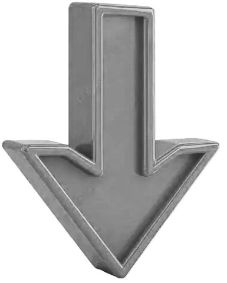

step1
right click step2
select inspectstep3
top right select consoloptional
refresh pageThe console is mainly used for debugging (finding and fixing errors). These methods show output in the browser console (Inspect → Console).
| method | defenation | example | output |
|---|---|---|---|
| console.log() | Displays general messages | console.log("Hello JS"); | Hello JS |
| console.warn() | Shows warning messages. | console.warn("This is a warning"); | Warning message (yellow) |
| console.error() | Shows error messages. | console.error("Something went wrong"); | Error message (red) |
| console.table() | Displays data in table format | console.table(["Apple", "Banana", "Mango"]); | Shows list as table |
| console.clear() | Clears the console screen. | console.clear(); | Console becomes empty |